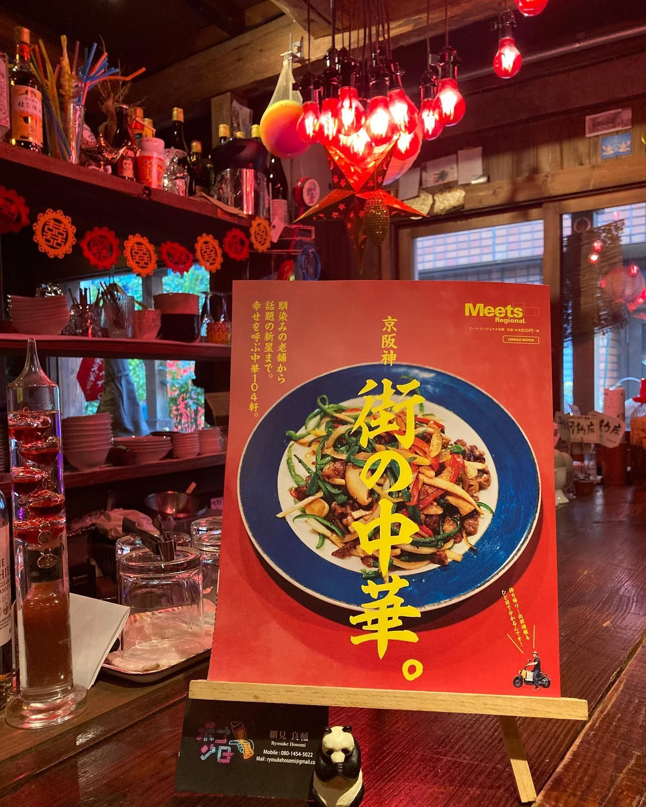
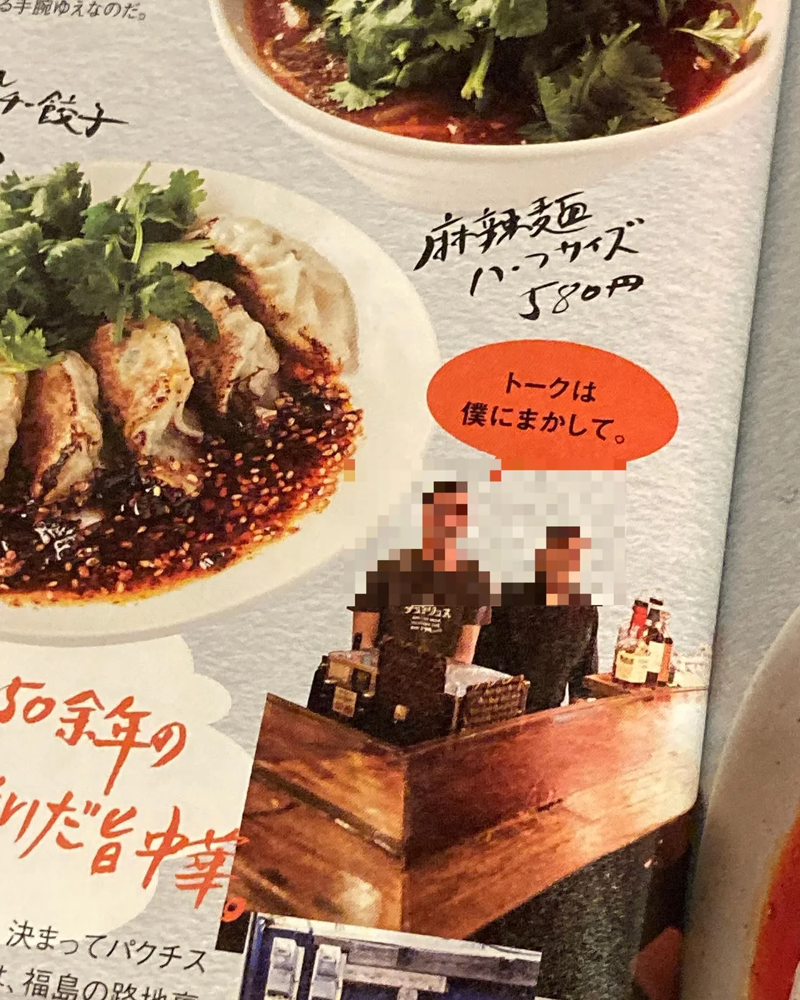

2021年1月22日
先週の『今ちゃんの実は、、、』


先週の『今ちゃんの実は、、、』 に続いて2021年メディア２発目！！ エルマガジン社さんの 『京阪神 街の中華。』 に掲載させていただきました。 こんなもん、今ちゃんとエルマガさんに出たら繁盛店ドリームつかめるやんかっ！！！ こんな時期じゃなかったらな、、、、 こんな時期じゃ、、 毎日、めっちゃゆったりしてます。 元気です！お待ちしてまーす🍺 ほんで、雑誌は中華愛に溢れてます。中華好きの方は楽しめる内容です！表紙がイケてる😭 エルマガさんの本は人生で1番買ってる雑誌なんで、掲載されるとほんまに嬉しいです！ 次は月刊meetsに出れるような店になりたいです！ #みなさん落ち着いたらご来店ください #落ち着かなくてもご来店してください #今ちゃんの実は #meets #中華バル#中華#中華料理#福島区グルメ#路地裏#B級グルメ#中国#チャイニーズ#路地裏チャイニーズ有馬#有馬#シュウマイ#餃子#点心#フォローミー#followme#パクチー